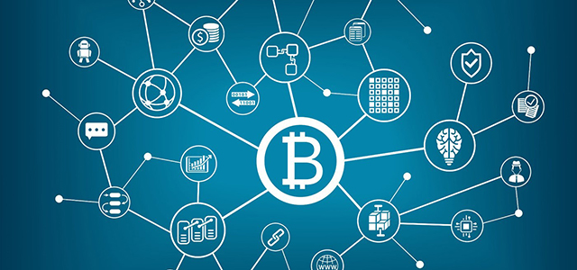
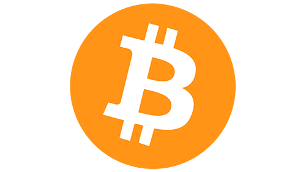
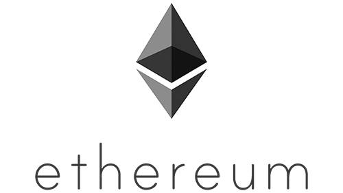
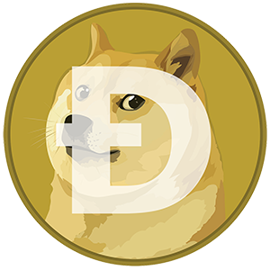

Las criptomonedas son monedas virtuales. Pueden ser intercambiadas y operadas como cualquier otra divisa tradicional, pero están fuera del control de los gobiernos e instituciones financieras.
Existe un gran número de criptodivisas disponibles, todas con sus propias características y aplicaciones. Las que tienen mayor capitalización bursátil son, al menos por ahora, una minoría que incluye el bitcoin, el bitcoin cash, el ether, el litecoin y el dash.
Las criptomonedas pueden considerarse una alternativa a las divisas tradicionales, pero en realidad fueron concebidas como una solución de pago completamente convencional. En estos momentos, un buen número de tiendas aceptan criptomonedas como forma de pago.
Aunque es cierto que su validez como método de pago es fundamental para su valor, las criptomonedas habitualmente se parecen más a materias primas como el oro que al mercado de forex. Igual que las materias primas:
Esto significa, al menos por ahora, que las criptodivisas son tratadas principalmente como una materia prima, es decir, una inversión cuyo retorno proviene de la especulación en torno a las subidas y bajadas en su valor.

Operar con criptomonedas es el acto de especular en torno a los movimientos de los precios de criptodivisas mediante una cuenta de trading de CFD, o comprar y vender las criptomonedas subyacentes en un mercado de negociación.
El trading de CFD es derivado, lo que te permite especular con los movimientos de los precios de criptomonedas sin ser el dueño de las criptodivisas subyacentes. Puedes ir largo (comprar) si piensas que el precio de una criptomoneda subirá, o ir corto (vender) si crees que bajará.
Los CFD son productos apalancados, lo que significa que solo necesitas abonar un pequeño depósito inicial, conocido como margen, para obtener una exposición completa al mercado subyacente. Tus beneficios y pérdidas se calculan en función del tamaño completo de tu posición, por lo que el apalancamiento magnifica tanto tus ganancias como tus pérdidas.
Al comprar criptomonedas mediante un mercado de negociación, adquieres las criptodivisas. Tendrás que crear una cuenta de mercado de negociación, aportar el valor total del activo para abrir una posición y almacenar los tokens de la criptomoneda en tu propia cartera hasta que estés listo para vender.
Los mercados de negociación cuentan con una aguda curva de aprendizaje, ya que uno debe familiarizarse con la tecnología necesaria y aprender a analizar los datos. Muchos mercados de negociación imponen límites en la cantidad de depósito, y las cuentas pueden ser muy costosas de mantener.
Los mercados de criptomonedas se encuentran descentralizados, lo que significa que estas no las emite ni respalda ninguna autoridad central, como un gobierno. En su lugar, se gestionan mediante una red de ordenadores, aunque pueden comprarse y venderse en mercados de negociación y almacenarse en carteras.
A diferencia de las divisas tradicionales, las criptomonedas solo existen como un registro de propiedad digital compartido almacenado en cadenas de bloques. Cuando un usuario desea enviar a otro unidades de criptomoneda, las manda a la cartera digital del destinatario. La transacción no se considera completada hasta que se verifica y se añade a la cadena de bloques a través de un proceso llamado minado, que también es el proceso mediante el que se crean nuevos tokens de criptomonedas.
Una cadena de bloques o blockchain es un registro digital de transacciones. En el campo de las criptomonedas, es el historial de transacciones de cada unidad de criptodivisa que muestra cómo sus propietarios han ido cambiando a lo largo del tiempo. El blockchain funciona registrando transacciones en bloques, añadiendo los nuevos en la parte delantera de la cadena.
La tecnología de cadena de bloques disfruta de medidas de seguridad únicas que no tienen los archivos de los ordenadores corrientes.
Un archivo de la cadena de bloques siempre se almacena en múltiples ordenadores de una red, en lugar de almacenarse en un solo lugar, lo que permite que sea legible para todos los usuarios. Esto hace que el proceso sea transparente y muy difícil de alterar, sin puntos débiles vulnerables a hackeos o a errores humanos o informáticos.
Los bloques se conectan mediante criptografía, usando matemáticas complejas e informática. Cualquier intento de modificar los datos altera los vínculos entre los bloques, y puede identificarse como fraudulento por los ordenadores de la red.
El minado de criptomonedas es el proceso a través del cual las transacciones de criptomonedas se verifican y se añaden nuevos bloques a la cadena.
Los ordenadores mineros seleccionan transacciones pendientes de una bolsa y las comprueban para asegurar que el emisor tiene suficientes fondos para completar la transacción. Esto incluye cotejar los detalles de la transacción con el historial de transacciones almacenado en la cadena de bloques. Una segunda verificación confirma que el remitente autoriza la transferencia de fondos usando su clave privada.
Los ordenadores mineros recopilan transacciones válidas en un bloque nuevo e intentan generar el vínculo criptográfico con el bloque previo encontrando una solución a un algoritmo complejo. Cuando un ordenador logra generar el enlace, añade el bloque a su versión del archivo de la blockchain y transmite la actualización a lo largo de la red.

Los mercados de criptomonedas se mueven de acuerdo a la oferta y la demanda. Sin embargo, como se encuentran descentralizados, no suelen afectarles los sucesos económicos y políticos que influyen a las divisas tradicionales. Aunque todavía existe una gran incertidumbre alrededor de las criptomonedas, los siguientes factores pueden tener un impacto significativo en su precio:
Bitcoin fue creado en 2009 por alguien identificado bajo el seudónimo de Satoshi Nakamoto con tecnología blockchain. Su objetivo fue de ser utilizado como un método de pago que no esté afectado por la supervisión gubernamental, retrasos en las transferencias o tarifas de transacción. Actualmente, Bitcoin se utiliza principalmente como forma de inversión. Se puede decir que sus características se asemejan más a las materias primas que a las monedas tradicionales. Sin embargo, su alta volatilidad le impiden ser una alternativa legal al dinero fiduciario. Es considerada la más importante entre los diferentes tipos de criptomoneda por los expertos.
Después de Bitcoin, Ethereum es la moneda digital con mayor capitalización de mercado entre los diferentes tipos de criptomoneda. Su cadena le permite crear aplicaciones basadas en la tecnología blockchain, así como sus propios tokens individuales. El Ether, se encarga de proporcionar el combustible necesario para procesar las aplicaciones descentralizadas de la red. Las emisiones de éter están limitadas a 18 millones por año, que es el 25% del suministro inicial. Y, los costos de transacción son calculados con base en su complejidad, ancho de banda y almacenamiento.
Ripple XRP es uno de los tipos de criptomoneda más grandes y conocidas del mundo y se comercializa en muchos intercambios de cifrado diferentes a nivel mundial. También es una red de pago para bancos con el objetivo de hacer que las transacciones de pago internacionales entre ellos sean más eficientes y rentables. El proyecto se dedica principalmente a las transacciones de pago entre diferentes áreas monetarias y trata de hacer que los corredores de pago ineficientes sean eficientes.
Fue creada en un protocolo Bitcoin modificado con el fin de llegar a más destinatarios que el mismo BTC. Actualmente, en el mercado circulan 128,2 mil millones de DOGE, y cada moneda se divide en 100.000.000 de lugares decimales. La ventaja de esta criptomoneda es que es barata, ya que una moneda cuesta solo $0.05037. Las recompensas mineras de Dogecoin han disminuido de $1,000,000 a $10,000. DUX. Los bloques se extraen con relativa rapidez, aproximadamente cada 1 minuto.
NEO es una criptomoneda y plataforma basada en la red blockchain que permite el desarrollo de activos digitales y contratos inteligentes. Además, es el primer proyecto chino de blockchain de código abierto. Originalmente, el proyecto existía bajo el nombre AntShares, lanzado en 2014 con un número total de 100 millones de monedas (todas ya emitidas). En agosto de 2017 se llevó a cabo un cambio de marca, como resultado de lo cual la criptomoneda cambió su nombre a NEO.
IOTA (MIOTA) es un proyecto de una plataforma de facturación de código abierto parcialmente descentralizada basada en la arquitectura DAG (gráfico acíclico dirigido), la criptomoneda Iota se creó como una tecnología de integridad de datos y dispositivos industriales para Internet de las cosas – Internet de las cosas – IoT, de ahí el nombre de la nueva criptomoneda. Permite un uso completamente nuevo y único de la tecnología Blockchain. Es liviana, infinitamente escalable, sin bloqueos ni tarifas de transacción.